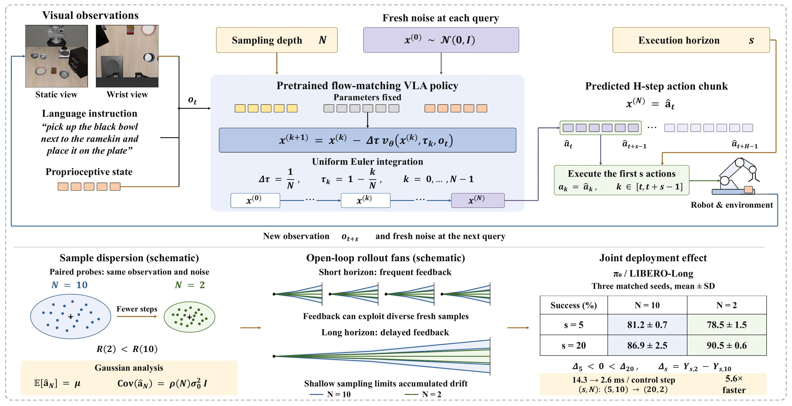

01Overview
Two deployment knobs, one coupled choice
TL;DR
Abstract
02Phenomenon
Fewer steps hurt fast replanning and help long open-loop runs
The sign reversal
Backbone
π0 on LIBERO-Long in one pictureThe 2 × 2 of Table I: each line follows one execution horizon from the default 10 steps to 2 steps.
Table I
The full horizon × depth grid
Backbone
03Mechanism
Truncation shrinks the cloud, not its centre

Deployment: N Euler steps, then s actions open loop
Every evaluation of vθ is a full forward pass of the backbone, so N is also the number of function evaluations per query. The policy is queried again at t + s with a fresh observation and fresh noise.
Proposition 1 · Euler truncation contraction (Gaussian target)
The mean is integrated exactly for every N; the spread is multiplied by g(N) = √ρ(N), which is 0 at N = 1 and approaches 1 at the rate 1 − c/N.
Euler contraction, live
(a) Cloud radius vs. sampling depth
(b) Open-loop spread over the horizon
04Results
Higher success at a fraction of the latency
Backbone
Interaction per suiteEach panel follows the short and the long horizon from the default depth to two steps; lines that cross reverse the sign of the depth effect.
Table I
Success vs. per-step latencyLIBERO average; the latency is per control step, amortized over the executed actions.
Depth effect by horizonΔs = Ys,2 − Ys,10 over the 50 tasks, with the number of tasks where two steps lose ground.
Table II
Average success of the six configurations
Backbone
All 50 tasksSuccess per task (100 rollouts each); click a column header to sort. The ten tasks printed in Table II are tagged.
Backbone
05Analysis
It is the redraws, not just less noise
Causal interventions on π0 / LIBERO-LongTwo-step minus ten-step success at s = 5 and s = 20 for each condition; the interaction is the change between them.
Table III
06Rollouts
Same scene, four deployments
07
Citation
If you find our empirical findings or analysis useful in your research, please consider citing our paper.
@article{yang2026coupling,
title = {Coupling Execution Horizon and Sampling Depth in Flow-Matching VLA Policies},
author = {Yang, Jiabing and Xu, Yuan and Chen, Yixiang and Ma, Qisen and Li, Peiyan and Wang, Kai and Cui, Chenhang and Yu, Tao and Wen, Zichen and Ye, Wen and Fang, Bowen and He, Ziheng and Wu, Xiangnan and Li, Yingda and Huang, Yan and Wang, Liang},
journal = {arXiv preprint},
year = {2026}
}